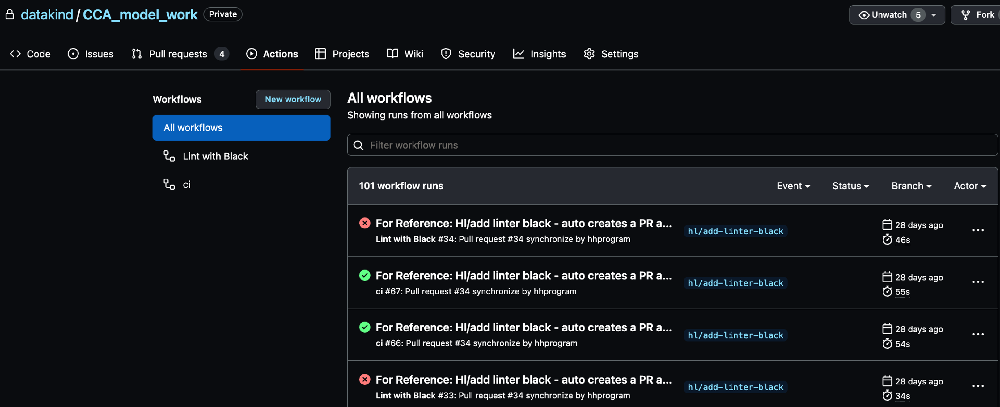

Intended audience: DataKind Volunteers
GitHub Workflow
Feel free to adjust this suggested GitHub workflow as it works best for your DataKind team to organize your code collaboration. We also welcome feedback and suggestions, as we continue to improve how we work together!
Setup
- Data Ambassadors can turn on branch protection such that teams need at least 1 approver (or more) before merging a Pull Request (PR) to `main`. This helps make sure your changes are reviewed and seen by your teammates.
- Data Ambassadors can also turn on a requirement that the branch needs to be up to date before merging, i.e. if there are merge conflicts with `main`, you need to pull that and merge it into your branch - and resolve conflicts, and then re-push your branch again before merging. This helps ensure that whatever code you are merging from the branch works with the latest version of `main`.
- If you need adaptations for any vision, hearing, motor, cognitive, or learning needs, check out GitHub’s accessibility settings.
If you need additional permissions to enable these features, please contact your Chapter Leader or DataKind staff member.
Suggested workflow
- Clone the repo to the location you will be working (your laptop, cloud env, etc.)
- Checkout the `main` branch and do a git pull to get the latest version
- Create a new branch using `git checkout -b
` - At some organizations, people put the ticket number in the branch name to easily make the connection to the referenced task. There are also integrations to handle this. For example, if you put in a jira ticket number like “exp-412”, it automatically is links to that jira ticket. This is not something we always do at DataKind, but could be helpful to add for your project.
- Do a bunch of great work and make commits.
- Then, push your changes up to the Github branch you’ve been working in.
- It often helps to make sure to pull `main` branch and merge into your new feature branch before pushing up changes. There is a feature on the GitHub website where it can merge for you, but if there are merge conflicts, it is easier to resolve them locally with the help of an IDE or text editor. A team member may have been pushing up new changes while you were working, and pulling those changes before you push your changes can help avoid conflicts.
- Go to the repo on GitHub and click “Pull requests” > “New pull request”
- Do this often, as people tend to favor smaller pull requests (i.e. fewer code changes) in order to make reviewing them more manageable and also to minimize chances of introducing bugs due to something getting lost in the large amount of code changes.
- Put the necessary description in the PR to help people give context
- Some teams like to have a template in their PR descriptions with sections like a “why?” (i.e. answer why we need the code changes in this PR) and a “what?” (i.e. a summary of what the code changes are).
- In the “Reviewers” section, click the gear box and type people in. You can search by name, but it also uses username string match. Then select the users that you specifically want to review your PR.
- Create unit tests for new code (if time allows or team wants to)
- Usually, there is a “build” process that runs unit tests, which could be done with GitHub Actions. If the unit tests run but fail, it will block you from merging. Unit tests can also be handy for colleagues and future volunteers to understand exactly what’s happening in the code, and prevent regressions in the code (i.e introduce new bugs that weren’t there before).
Check that GitHub Actions are running properly
When you first introduce GitHub Actions workflows, you should be able to see the workflow being run when you create a PR (even before you merge it you’ll see if it passes or doesn’t pass under the “checks” in a PR). If you don’t see anything like that, then something with Github Actions is not set up correctly.
If you don’t have a `.github` directory in your repo or yaml files under that directory, then a workflow hasn't been set up yet. Once you try to set up a workflow for the first time, you can always go to the “Actions” tab and see the GitHub actions that have been run or tried to run. (See below screenshot)
Note that for subsequent workflows added, you shouldn't have to go to the `Actions` tab again. Going forward, you should see the workflows run attempts directly in the PR. It’s just that when setting up the first workflow, it doesn't always appear in the PR - especially if it's failing.
Once the GitHub Actions workflow is run properly, it becomes a “status check”. You can then go back to the branch protection rules and under the “Require status checks to pass before merging” section, you can search for the name of your status check in the search bar to add it to the required status check before merging. The name is the “name” that you gave under the “jobs” attribute in your yml file.
To learn more about GitHub Actions, check out resources on features, using workflows, and workflow syntax. Additionally, here is a commonly used github action repo as an example.
Best Practices
Additionally, keep the following GitHub best practices in mind:
- Keep essential information in the GitHub README, such as a directory structure description, what each file is responsible for, steps on how to run the code, where the logs get printed, and simple instructions for onboarding to contributing to the project.
- Select someone as the point person for merge requests.
- Include in GitHub a requirements.txt or .json file listing all the dependencies with versions.
- Don’t save any credentials, passwords, or authorization tokens on GitHub (or any other public facing platform). getpass is a great way to avoid this!
- Let Git archive for you. As Git is designed to track old versions, there’s no need for folders labeled “archive” or “old” -- they just clutter up your workspace! Instead, add notes and pointers to README and other docs. Use git tag and git rm to safely archive work with git.
- Take advantage of TODOs! (or your native language’s equivalent). Keep the knowledge of what’s work-in-progress and what’s completed with the code.
- Separate exploratory/ad hoc work and code that is more reproducible.
- Try to merge back to the mainline every 5-10 commits and remove old branches.
GitHub and Slack integrations
DataKind project teams can request to set up GitHub-Slack integration to get notified through Slack when there are things happening in GitHub, so you don't miss PRs and other work.
- In Slack, you should see a GitHub app. If not, you can click on “DMs” and just search GitHub; the GitHub app should pop up.
- Once the GitHub app is installed in Slack, you can run a command like /github to see the possible commands.
- For example, with a project with Complete College America, DataCorps team members ran /github subscribe datakind/CCA_model_work. This linked changes made to the repo to the team members’ Slack, so they would get notifications.
- You can then also add a subscription for comments by doing /github subscribe datakind/CCA_model_work comments. This gives you all comments on a PR, which can get noisy. Alternatively, you can just subscribe to mentions using these steps.
Contributer(s): Nicole Kidman
Contact us
If you would like to learn more about us, partner with us, or get in touch, email us at community@datakind.org
Subscribe